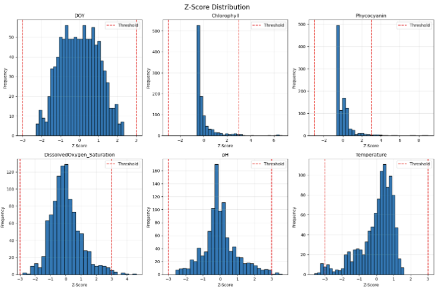
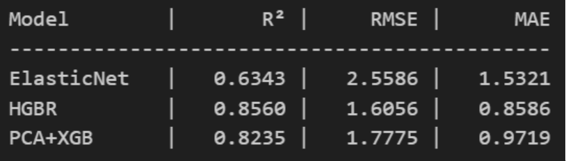
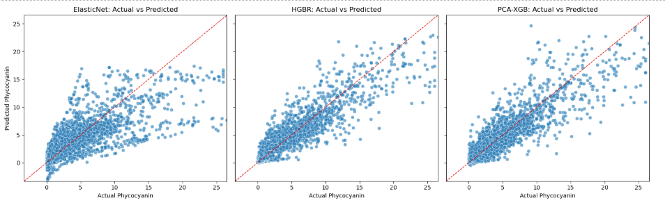
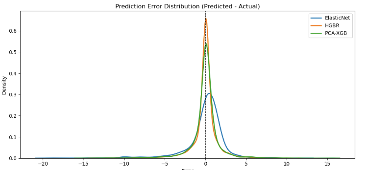

Harmful algal blooms (HABs) are excessive growths of cyanobacteria that produce toxins detrimental to both aquatic life and humans. These events can devastate a lake's ecosystem; as the algae are consumed, toxins accumulate and cascade up the food chain. Furthermore, the blooms rapidly consume dissolved oxygen, creating hypoxic "dead-zones" that suffocate surrounding marine life[1].
The impact of HABs extends to human health and local economies. The toxins produced can cause flu-like symptoms in humans and are lethal to pets. Lakes used for recreation and drinking water are particularly vulnerable. In 2011, a severe bloom in Lake Erie forced the limitation of recreational activities, resulting in an estimated $10 million in lost revenue[2].
This project aims to develop a machine learning model to predict phycocyanin concentration, a key pigment and indicator of cyanobacterial HABs. By creating a reliable predictive tool, this work seeks to assist resource managers in mitigating the conditions that lead to blooms, thereby protecting both the ecological and economic health of freshwater systems.
Iowa Lakes HAB Monitoring Data: Our primary dataset originates from high-frequency monitoring of four Iowa lakes conducted between 2014-2018. The lakes include Green Valley Lake (2014-2015), Blackhawk Lake (2015), Swan Lake (2018), and South Twin Lake (2018). This dataset contains daily aggregated measurements of critical water quality parameters: temperature (°C), dissolved oxygen saturation (%), pH, chlorophyll-a concentration (RFU - Relative Fluorescence Units), and phycocyanin concentration (RFU). The Iowa dataset provides 644 samples representing diverse lake environments and temporal variations across different years and seasons. After preprocessing, this contributes approximately 400-450 samples to our final cleaned dataset.
Lake Mendota Water Quality Data (NTL-LTER): The second dataset comes from the North Temperate Lakes Long-Term Ecological Research (NTL-LTER) program, specifically from a monitoring station at the CFL Pier on Lake Mendota, Wisconsin. Data was collected during the 2023 growing season (April-October). The NTL dataset originally included high-frequency measurements with additional advanced sensor readings: specific conductivity (μS/cm), turbidity (NTU), fluorescent dissolved organic matter (fDOM, RFU), depth (m), raw dissolved oxygen (mg/L), and various quality flags. For consistency with the Iowa dataset, we extracted and standardized the common water quality parameters, contributing approximately 420 samples to the combined dataset.
HABs cannot only destroy lake ecosystems, but also harm humans that use the lake for recreation and even drinking water. The toxins produced can result in flu-like symptoms in humans and even kill pets, and when the algae breaks down, the oxygen consumption creates dead-zones for marine life. In 2011, Lake Erie experienced one of the worst blooms in history, where recreational activities had to be limited. In a lake where tourism is common, this bloom resulted in over $10 million lost in revenue [2]. Past research with crop yield prediction using an ensemble of 6 regression models outperformed industry models with an R^2 score of 0.98 [3]. Creating a model to predict HABs can assist lakes in decreasing the chances for these blooms by manipulating external factors, and create an environment where such HABs are unlikely or even impossible.
Unified Dataset Approach: Rather than conducting separate comparative experiments, we implemented a unified modeling approach by combining both datasets after careful preprocessing and standardization. This decision was driven by our limited sample size and the need for robust model training. The combined dataset leverages:
Dataset Statistics: The combined raw dataset contained 1,061 samples. After rigorous quality control—including removal of physically impossible values and statistical outlier detection (z-score > 3)—we obtained a cleaned dataset of 957 samples. To address the limited sample size and improve model generalization, we applied synthetic data augmentation techniques, expanding the training dataset to 4,302 samples. This augmentation helps prevent overfitting and enables more robust learning of complex patterns in phycocyanin concentration prediction.
Feature Space: The final feature set consists of both continuous and categorical variables. Continuous features include temporal indicators (Year, DOY), water quality measurements (Temperature, pH, DissolvedOxygen_Saturation, Chlorophyll), while Lake name serves as a categorical feature to capture location-specific effects. Notably, we deliberately retained features like Year, DOY, and Chlorophyll despite potential correlations, allowing our regularized models to automatically determine feature importance and handle multicollinearity through built-in regularization mechanisms.
Rationale for Unified Approach: While the original NTL dataset contained advanced sensor measurements (conductivity, turbidity, fDOM) not present in the Iowa data, we chose to standardize on common features for several reasons: (1) maximizing sample size for more robust model training given limited data, (2) ensuring model predictions rely on sensors commonly available across monitoring stations for practical deployment, (3) avoiding sparse feature matrices that could complicate model training, and (4) enabling the development of generalizable models applicable to diverse lake systems. The categorical Lake feature allows models to learn location-specific patterns while sharing statistical strength across all samples.
Exact numbers: Iowa (643 samples), NTL (418 samples), combined (1,061), final cleaned (956), synthetic (4,302)
Step-by-step process: Column standardization, invalid data removal, z-score outlier detection (|z| > 3)
Specific thresholds: pH [0,14], temp ≥0°C, DO [0,300]%, no negative Chlorophyll/Phycocyanin
Retention rate: ~90% of data kept after cleaning
Synthetic augmentation: 4.5x expansion explained
Target leakage prevention: Regex-based exclusion of phycocyanin-related features
One-hot encoding: Specific implementation with min_frequency=10 for trees
Two preprocessing pipelines:
Linear: Median imputation → Standardization
Tree-based: Median imputation only (scale-invariant)
Rationale: Why median over mean, why standardization matters for linear models
Model 1: ElasticNet
Hyperparameters with explanations: α=0.05, l1_ratio=0.2, max_iter=5000
Why 20% L1 / 80% L2 mixing
Actual performance: R²=0.6343, RMSE=2.5586 RFU
Model 2: HGBR
Complete hyperparameter list: learning_rate=0.06, max_depth=6, max_bins=255, min_samples_leaf=10
Histogram-binning explanation (255 bins)
Early stopping mechanism
Superior to ElasticNet
Model 3: PCA + XGBoost
Two-phase approach:
Phase 1 (Unsupervised): PCA on numeric features with dynamic component selection
Phase 2 (Supervised): XGBoost with early stopping
Two-stage training: Fast CV (350 estimators) → Full training (2000 estimators)
Regularization: subsample=0.8, colsample_bytree=0.8 for stochastic boosting
85/15 train/validation split for early stopping
5-fold CV with cross_val_predict for out-of-fold predictions
Three metrics explained:
R²: Variance explained
RMSE: Sensitive to large errors
MAE: Robust to outliers
Validation strategy: Separate 15% holdout for XGBoost early stopping
Data leakage prevention: Pipeline fit on train, applied to validation
Comparative philosophy: Linear vs. non-linear vs. dimensionality reduction strategies
With our chosen datasets, we preprocessed them in order to eliminate extreme outliers. We first eliminated all rows with impossible data readings, specifically phycocyanin levels below 0. Afterwards, we set up Z-score outlier identification graphs for different features and eliminated rows showing extreme outliers to prevent our model from overfitting to these outliers.
We are also synthetically creating more datasets to increase our models sample size to train, and these z-score graphs provide the averages and deviations to create accurate synthetic data. Our models intend to predict algal blooms from standard scenarios and including these outliers provide scenarios of unique situations.
We evaluated 3 different models using 5 fold cross-examination. The models were ElasticNet Regression, Histogram Gradient Boosting Regressor (HGBR), and XGBoost. We included a Principal Component Analysis prior to the XGBoost model in order to extract rough latent factors. Here are the quantitative results of the three models.
Based on our results, it is clear the predictive performance of ElasticNet is lower than HGBR and PCA+XG, along with RMSE and MAE showing greater error. The ElasticNet model combined Lasso and Ridge regularization. The linear relationship assumed by the models between the features and the target variable of phycocyanine is not realistic for the lake environments we are testing. Algal growth in these lakes are highly nonlinear as there are many features that affect the growth. This linear baseline reveals the ability of the nonlinear models to capture complex, non-linear relationships between environmental factors and algal growth with much higher predictive performance and less error.
Here we have scatter plots comparing the models predicted phycocyanin vs actual phycocyanin. The linear model of ElasticNet shows poor ability to predict high phycocyanin measurements, typical of an algal bloom. HGBR and PCA+XGBoost captured these peaks more effectively, with HGBR having a tighter spread along the 1:1 line, reinforcing its superior performance in R^2, RMSE, and MAE scores. Although both are nonlinear models, XGBoost performed slightly worse. The PCA reducing the dimensionality may have removed some variance importance required for accurate prediction compared to computation of HGBR using raw features, even though such reduction is beneficial for computational efficiency.
As you can see from this additional graph comparing prediction error in the 3 models, it follows the previous results and their respective performance where HGBR outperforms with PCA+XGBoost close behind, and ElasticNet showing significantly more error than the others.
Overall, results show the superiority of non-linear ensemble methods in forecasting algal growth based on lake’s features. This is most clear in the jump of 0.63 to 0.85 in R^2 score from ElasticNet to HGBR.
Our next steps include extracting feature importance and partial dependence plots from HGBR and XGBoost to confirm which predictors have greater influence on model decisions. We will also look to expand our sample size with other lake readings if can be found to add to model robustness, and potentially expanding the feature set by integrating meteorological and nutrient-loading variables (e.g., rainfall, wind speed, nitrogen/phosphorus) to improve bloom onset prediction if these readings can be found.
[1] Muyuan Liu, Yuzhou Huang, Jing Hu, Junyu He, Xi Xiao, “Algal community structure prediction by machine learning”, Environmental Science and Ecotechnology, Volume 14, 2023, 100233, ISSN 2666-4984, https://doi.org/10.1016/j.ese.2022.100233.
[2] Holli Riebeek, “Toxic Algae Bloom in Lake Erie.” NASA, NASA, earthobservatory.nasa.gov/images/76127/toxic-algae-bloom-in-lake-erie. Accessed 1 Oct. 2025.
[3] Ramesh V and Kumaresan P, “Stacked Ensemble Model for Accurate Crop Yield Prediction Using Machine Learning Techniques,” Environmental Research Communications, vol. 7, no. 3, pp. 035006–035006, Feb. 2025, doi: https://doi.org/10.1088/2515-7620/adb9c0.
| Name | Proposal Contributions |
|---|---|
| Randy Cho | Creation of the 3 models used, help in building the report. |
| Wyatt Bunch | Creation of new synthetic data, preprocessing methods, help in building the report. |
| Henry Arnold | Main component for creation of report, visualizations and metrics for the models. |
| Curtis Cao | Data gathering process, help with preprocessing, help in building the report. |
| Maehul Bhandary | Creation of data preprocessing methods, visualization and metrics code, help in building the report. |